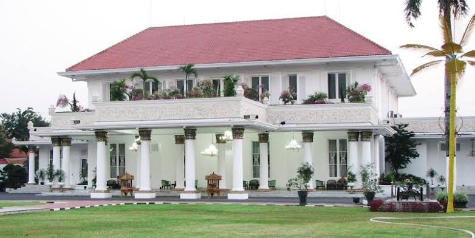

Kota terbesar di Provinsi Jawa Timur, sekaligus menjadi ibu kota provinsi tersebut.
Sejarah

Cerita Sejarah Kota Surabaya kental dengan nilai kepahlawanan. Sejak awal berdirinya, kota ini memiliki sejarah panjang yang terkait dengan nilai-nilai heroisme. Istilah Surabaya terdiri dari kata sura (berani) dan baya (bahaya), yang kemudian secara harfiah diartikan sebagai berani menghadapi bahaya yang datang. Nilai kepahlawanan tersebut salah satunya mewujud dalam peristiwa pertempuran antara Raden Wijaya dan Pasukan Mongol pimpinan Kubilai Khan di tahun 1293. Begitu bersejarahnya pertempuran tersebut hingga tanggalnya diabadikan menjadi tanggal berdirinya Kota Surabaya hingga saat ini, yaitu 31 Mei.
Geografis
Kota Surabaya sebagai ibukota Provinsi Jawa Timur terletak di tepi pantai utara Provinsi Jawa Timur atau tepatnya berada diantara 7° 9′- 7° 21′ Lintang Selatan dan 112° 36′ – 112° 54′ Bujur Timur.W ilayahnya berbatasan dengan Selat Madura di sebelah Utara dan Timur, Kabupaten Sidoarjo di sebelah Selatan dan Kabupaten Gresik di sebelah Barat. Luas wilayah Kota Surabaya adalah 52.087 Hektar, dengan luas daratan 33.048 Hektar atau 63,45% dan luas wilayah laut yang dikelola oleh Pemerintah Kota sebesar 19.039 Hektar atau 36,55%.
Oleh sebab itu, kota ini dijuluki sebagai kota terbesar kedua di Indonesia.
Wisata
Surabaya dikenal dengan sebutan kota metropolitan. Oleh karenanya, sebagian besar wilayah di kota ini diisi oleh bangunan. Sehingga, tidak banyak wisata alam yang terdapat pada kota ini,
namun masih ada beberapa wisata di kota ini yang dapat anda kunjungi bersama denga keluarga, kerabat, teman maupun pasangan anda.
Museum Tugu Pahlawan
Monumen Tugu Pahlawan
Tugu Pahlawan adalah sebuah monumen yang menjadi markah tanah Kota Surabaya. Tinggi monumen ini adalah 41,15 meter dan berbentuk lingga atau paku terbalik.
Terletak di Pusat kota Surabaya, Monumen atau Mueseum ini bisa dibilang selalu ramai dikunjungi oleh wisatawan mulai dari anak-anak hingga dewasa. Didalamnya terdapat sejarah bagaimana arek-arek Suroboyo berjuang melawan penjajah.
Kebun Binatang Surabaya
Ikon kota Surabaya
Kebun Binatang Surabaya (KBS) adalah salah satu kebun binatang yang populer di Indonesia dan terletak di Surabaya. KBS merupakan kebun binatang yang pernah terlengkap se-Asia Tenggara, di dalamnya terdapat lebih dari 211 spesies satwa yang berbeda yang terdiri lebih dari 2.236 binatang
Terletak di Pusat kota Surabaya juga, kebun binatang ini selalu ramai dikungjungi. Selain karena letaknya di tengah kota, didepan kebun binatang ini terdapat satu monumen atau ikon surabaya, oleh karenanya wisatawan atau pengunjung slelau berdatangan untuk berswafoto didepan ikon kota Surabaya tersebut